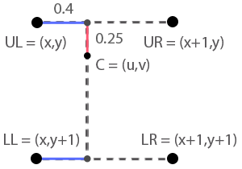

Resource for Java game programming
File not Found
This page is not yet available.
Under construction
A number of articles have not yet been filled with content. That will come over time. I hope you what's already available is of use to you.Introduction
This archive contains mathematics and algorithms and is not intended as an introduction to math nor programming. I'm assuming a reasonable level of skill on the reader. On the other hand, I'm open for questions. You can email me if you have any.The side-bar on the left is a navigation tool. Click on the buttons and select a sub item to view its content. Options marked with an X are not yet available.
All source files/packages are self-contained. No obscure external libraries required.
Through the archive, you'll find a number of icons. These are buttons that copy the content to the directory of your choice. These links do not connect to the clearnet. Down below is what those links would look like. I made a bunch of icons you can download by clicking the ZIP icon.
All source code downloaded in these articles fall under a MIT license.
Drawing pixels on a window
The devs over at Oracle have made it really easy for us to spawn a window. We use the Java Swing library to create a window and customize it with the ability to add a drawing surface.The Surface class in the above code is an extended JPanel to which we assign color data. All colors are represented as 32-bit integers(4 bytes). Each byte represents a sub-pixel value including transparency. The majority of monitors are 24-bit(3 bytes) and do not display transparency(for obvious reasons). Therefore, we can ignore 1 byte of data when drawing to the window.
Putting all this together gives us the ability to draw whatever we like onto a window. From here, we can start drawing shapes and images.
Optimizing pixel rendering
With the code provided above you can get pretty far, however it's very slow. We are getting a lot of class call overhead by calling plot(...) for each pixel. Calling plot(...) in turn calls setRGB(...), which in turn calls various classes and methods inside the BufferedImage object. To speed things up, we want to plot our pixels directly into a buffer which is tied to the BufferedImage's content. This way we circumvent a lot of the overhead. We're going to keep the BufferedImage, but we're going to extract the int[] in which the pixels are stored.I added two new fields. An int[] to store a reference to the pixel data, and an int to store the width of the window. We need the width to calculate the position in the array when given a 2 dimensional position to place our pixel.
A simple modification sped up our rendering ten fold! Remember that we initialized the BufferedImage as a TYPE_INT_RGB. This means all pixel data is going to be the size of an integer and it's decoded as RGB discarding the leading 8bits of data. We will be using that channel for transparency. Eight bits per color channel may not sound like much, but it gives us 16.777.216 different colors to work with.
Hardware Acceleration in Java
Although the above method is pretty fast for Software rendering, sometimes you just want more power. If you're like me, you got a custom build gaming rig with all that specialized hardware, but no way to use it in your Java games.Most of the acceleration is hidden from the programmer. All we have to do is let the Java runtime environment know when we applied data to memory, then call the hardware to update our window. We set up our code by calling the GraphicsEnvironment. This object contains information about our graphics card. We add a method to our Surface to enable the hardware.
We need to make an alteration to the repainting in the Surface class. Instead of now only rendering with a BufferedImage, we include a statement to switch to VolatileImage. In order to use the hardware, we let the volatile image give us access to the hardware Graphics object. From there, we render our content as usual.
The key difference between the two methods is memory. BufferedImage uses RAM, while VolatileImage uses VRAM. For the GPU to do any rendering, it reads the VRAM which is a lot faster than regular RAM. If it's more convenient for you, you can also use the BufferStrategy class to manage your rendering. It makes use of VRAM the same way Volatile images do.
Rendering geometry
There are situations where you just want to draw some lines, circles, rectangles and the like instead of advanced image rendering. For example, when you're trying to debug some vectors. Let's start with a line.Down below is a version of Bresenham's line algorithm. The method takes two (x,y) positions, a color and a surface to draw on. In this case, it's an IntBuffer object from my rendering engine. Notice that the method uses only integers to compute incremental error to determine stepping instead of divisions and checking ratios (floating-point math).
Using the line method from above, it's easy to produce a rectangle and a triangle.
Bresenham's algorithms are also available for circles and ellipses. They use a square-root method using integer arithmetic only. The circle method actually draws eight segments that are part of the perimeter. The method takes a position (x,y) as it's center, a radius in pixels, a color and the surface to plot on.
The ellipse method does something similar, but draws eight parts of the perimeter in two batches. The first for() loop draws the poles, and the second loop draws the sides.
Throughout my work I've only scarcely needed to render unfilled primitives. But hey, now you know how to render them.
Rendering filled geometry
The most useful primitives to render(i.m.o) are the rectangle and triangle. In this article I'll cover how to render both. Rectangles are a piece of proverbial cake, so lets get that out of the way first.No more than two loops to cover both the x and y axes are required. Hell, I can think of a way to do this with just one loop, but I doubt it would be much of an improvement. This code renders a rectangle from the center of the given position. It also clips off the edges when it tries to render outside of the given screen.
Now the more exciting primitive; a filled triangle. This is actually a big deal in computer graphics. Being able to draw a triangle allows us to render shapes composed of multiple triangles that can be predefined with a set of points. We draw them in 3D world-space, and instead of giving each pixel the same color, we refer to another image as source data(aka. a texture). This is the basis of 3D world rendering. Since practically all 3D rendering is done in hardware nowadays, programmers can be forgiven for not knowing how triangle rasterization is done. There are many methods, but the two main algorithmic competitors are the "half-space" and "scanline" algorithm.
Half-space rasterization
The name "half-space" lends itself to the area of the triangle compared to its bounding rectangle. For each point/pixel in the bounding box, we check if it's inside the triangle or not. All pixels in the triangle will then be plotted to a destination.Observe the image on the right. To determine if a point is inside a triangle we check if it's always on the left of an edge. If all sides agree it's on the left, we plot the pixel. You can check for the right-hand side as well, it's up to how you code your algorithm.

To calculate the handiness of a pixel, we'll use the cross-product of two vectors. One vector represents an edge, the other is the vector from a point of the triangle to the pixel. If the z component of the cross product is positive, meaning towards you out of your monitor, then the point is on the left of an edge. In order to do some math, we need to label the things of interest.
Let the points of the triangle be P 1, 2 and 3, and a point Q. To check side P1 to P2, we get:
Now we check if the z component of vector s is positive. If so, check the next two side, otherwise skip to the next pixel. However, the cross product computes in three dimensions and we only need one. We don't want the CPU do unnecessary math, so let's take a closer look at the cross product.
We only need the bottom component of our equation, and we'll incorporate that into our code.
Substitute the vectors for the subtractions we did earlier.
The resulting conditional statement would be:
(x2 - x1) * (qy - y1) - (y2 - y1) * (qx - x1) < 0
But wait, what's that?! Why do we check (...) < 0? I thought we are looking for positive values? Yes. This is due to a mismatch in orientation on the y-axes. Monitors have their y-axes pointing down while in math it's pointing up. This means our vector s is going to have inverse values that we need to correct. Not a big problem in this case, but it can result in long days of debugging if you happen to forget.
Anyway, down below we have the complete rasterizing method. It is in need of some serious optimization which I will not be doing in this article. The key advantage of this method is that we can check for blocks of pixels to see if they're inside the triangle, or not, or on the edge. This can save us a lot of time compared to just checking each pixel individually. If my memory serves me right, the vast majority of hardware use an optimized version of this algorithm.
Scan line rasterization
Another method for rasterizing a triangle is to scan each row of pixels along the edges and draw a line in between. Because a triangle is made from three points, one of our edges will fall short when traced to the bottom, and instead changes direction. So we draw the triangle in two parts.Easy, right? So let's get to some code. We first declare our (x,y) positions as objects. In Java we can turn them into float[], but you can just as easily make those array method parameters. Then we sort the three vertices on their y-axes top to bottom. Almost all data types in Java are references, except for primitive types. Though float is a primitive type, float[] is not. Now we can easily swap the vertices around without affecting the data.
Next we create our edges with a new class (included in the source code). All the Edge class does is step down for each pixel along the y-axes and find the correct pixel on the x-axes to start/finish drawing. We retrieve the top, mid and end position in y, and we also want to know the triangle's handiness by checking the cross product of the top two edges.
Drawing one part of the triangle is as simple as looping from the top to the middle. And then from the middle to the bottom. We need to know what edge is on the left(since we draw left-to-right) by using the triangle's handiness.
And that's it. You got yourself a triangle with blazing fast performance! This method of rendering is very useful in software rendering engines. The key advantage of the Scan Line algorithm is that it's already very fast, but does not leave much room for optimization.
Fill convention
There is one last thing I need to mention before we wrap this article up. Drawing triangles is one thing, but that doesn't mean adjacent triangles connect together properly. The result may look like some pixels are missing in between the triangles, and whatever is drawn behind it becomes visible.The solution is to render all triangles with the same rule. All top-left edges will round their potential pixel positions to the right, the other edges will round to the left. This is done with a ceil() function. In the source code provided above you'll notice that the Half-space algorithm doesn't use the ceil() function at all. This is because the math behind half-space rendering is theoretically already blocking all the gaps (in a perfect world where computer are not susceptible to floating-point rounding errors). Since the scan line method does not automatically conform we need to use the ceiling function.
Loading images
Loading and drawing images is pretty easy, but we do need the right preparations to get that done. So the plan is to make a buffer class that can hold 32 bit color data, among other things. Image can be loaded using a few standard java/javax libraries and copy over the content to our buffers. So first the data buffer class, lets call it an IntBuffer. It's pretty straight forward. You can plot, grab, copy and extract data.Files are accessible in a variety of ways. Either some file on your hard drive, or tucked away in a JAR file somewhere. This includes files that are embedded in your own project, a.k.a. resources.
For regular file loading we call the ImageIO class which is standard in the Java library. In case of errors we return an empty image. It's good practice not to return null values when you don't have to. Resources are loaded as an input stream. We use the ClassLoader to link a directory to a stream of data and load that into a BufferedImage. When the image has been successfully loaded, we copy all the pixels in RGB format into the integer buffer and return it.
Drawing images
Now that we got the data in stored in memory, lets plot onto another IntBuffer. The code below also clips when placed outside of the screen's boundaries.Floating point rendering
There may be circumstances when drawing needs to look smooth. Almost as if the image is gliding across the screen instead of snapping on a grid of pixels. We can't actually render partial pixels, unless you want to go down to the sub-pixel level. Another trick it to play with the brightness and color blending to simulate smooth movement.To do this, we'll apply area mapping to determine how much of an influence each pixel has to a color on the source image. As the image glide over the window, each image pixel generates an offset with the grid it gets plotted on. The offset is used to interpolate the influence of each color (bilinear interpolation) and that gets plotted to the window.
The weighted sum of each pixel gives us the following equation:
It's a neat little trick that makes your game look just a bit better. Whether you implement this method into your engine depends of your type of game. If you have to deal with a lot of slow moving objects, you may consider using this technique.
TODO:
- need a good Lanczos algorithm
- need a good Lanczos algorithm
Up-Scaling images
There comes a point in your game when you have to scale some images. This could be an animation, an explosions or some other particle effect. Naturally, you want the scaling algorithm to match the general quality of the game.There are a few techniques I want to present to you in this article with varying degrees of quality. Though I say 'quality', take it with a grain of salt. Sometimes you want to scale with lower quality to, for example, preserve data correctness. Nearest Neighbor interpolation doesn't generate new data. In other situations the detail of an image, or data, isn't important and it's all right to let it get smudged out through bilinear interpolation.
The plotting method will calculate the location of a pixel from where it should be reading from the source image. These locations are all floating point and can be used to calculate the interpolants in the algorithm. Down below you see a truncated version of the scaling method. The full method can be found in the provided source code.
Nearest Neighbor
Probably the easiest technique to implement into an algorithm. Each data point has a pixel color associated with it. For each pixel we attempt to render the algorithm determines what data point is the closest to it. Then it grabs the accociated data and plots it to a destination image.
The math is pretty straight forward. For each value on an axes, we add a half and then floor the result. In other words, we round the value up if x ≥ 0.5 otherwise we round down.
This is also a handy coding trick. Casting positive floating point values to an integer effectively floors the number. So if you add 0.5 and then cast the float to an integer you get the same result as using Math.round(x). I'm only showing how it's done on one axes, but it can easily be implemented in 2 dimensions.
Linear Interpolation
Linear interpolation is the technique of applying a change between two values in equal steps. This causes some pretty strong blending up to the point where almost none of the original data can be found on the resulting buffer. When applied to images, it clearly shows piramid-like shapes around each data point. But as alluded to earlier this effect is sometimes desired.
To know how much we interpolate between two data points, we take the difference between x and its floor value. Our interpolation function will take three agruments; the two values between which we interpolate and the interpolantion value.
Expanding this to two dimensions requires something called area mapping. We no longer interpolate between two values but four instead. The point (u,v) in the image below is the location of the point we're trying to render. It's not dead center on a data point so we need to know it's offset from the grid.

It doesn't matter from which point you calculate the offset, but I'll use the upper-left (UL) point since it makes the math a whole lot easier. The value of C is the sum of all the relevant points multiplied with their offsets.
We interpolate on the x-axes between to top two and bottom two points. Then we interpolate on the y-axes between the two blended points.
This blending technique is very fast and versatile. You'll see it pop up a lot in these articles.
Cosine Interpolation
This method is very similar to linear interpolation, except that the steps between two points are a trigonometric curve.
Since this technique is applied the exact same way as bilinear interpolation all you have to do is replace the equation that computes the interpolation with the following;
The result is a mixture between two extremes of nearest neighbor and bilinear interpolation. Even though color are blending together nicely, it's still obviously blocky when upsampling a bit too much.
Cubic Interpolation
To get better quality upsampling at higher resolutions we use a more complicated algorithm. It involves using the slope at the control points between which we interpolate. This allows us to make a more convincing curve and get better results.
Cubic interpolation relates to the use of a third degree polynomial.
Of this function we take the interval between point 1 and point 2. Imagine each interval between data points to contain their own equation that neatly connects to one another. This is also known as a spline. A piecewise function which defines a continues curve.
Rotating a raster
When making a game, it's inevitable that you'll have to rotate some images to match the movement of limbs(for example). The standard Java library already has raster rotation in-build. This works fine for generic applications, but you can't expect those methods to be optimized for speed. Rendering speed is vital for a game's presentation and you may have to resort to custom methods.I want to cover three approaches for raster rotation. Each with different quality results. Our victim is going to be this nyan-cat.
Keep in mind that the resulting images after rotation will likely be of larger dimensions. To calculate the new image size, we apply a rotation transform with absolute values on the current dimensions.
Rotation by point-transform
The solution to rotating an image is actually pretty straight forward. Each pixel is represented as a vector and then multiplied with a rotation matrix.The result is the location of where we plot our pixel. Seems pretty easy, right? Down below we can see the result at 30 degrees.
The rotation worked, but something else did not. What we have here is a classic theory-vs-practice scenario. The math is correct, but it assumes each point to be infinitesimally small and pixels are actually little squares. Not only that, but each pixel rotation get rounded, effectively snap-to-grid. So some pixels will overlap another pixel. This effect is known as aliasing (a sample of data becoming indistinguishable from another). Or, sometimes the rounding causes a gap to form.
Also notice the pattern of dots on the image. An emergent property from the math on a finite geometry. This is why I love mathematics. Back to the topic at hand. So what's the solution to these gaps? We invert the problem.
Rotation by sampling
Instead of rotating each source pixel, we select a destination pixel and rotate it back to select a source color. This way we prevent gaps from forming, because all destination pixels are processed. The math is almost the same. Just transform each pixel with the transpose of the rotation matrix.And the result..
Nice. The code really isn't that complicated and the benefit of this method is that it's pretty fast as well. With some optimizing you can make this a staple method in your rendering engine. But, it does present another problem. We fixed the 'gap' issue, but we're still rounding (nearest neighbor) our results causing the jagged appearance. How do we solve that? We apply area mapping.
Area mapping
The odds that a rotated pixel matches the location of a source pixel is highly unlikely. Our pixel is going to cover a maximum of 4 pixels on the source image. We find out how much of a percentage that coverage is and take a weighted sum (bilinear interpolation) of those colors to determine the color we need to plot.The weights for the sum are determined by the difference of the upper-left pixel and the mapped pixel. The formula then becomes
Simplifies to
This sum will look as following in code. We first interpolate the top two colors, then the bottom two, and finally we interpolate between the two results.
And the result? Crickey! She's a beauuty.
Plotting with transparency
In order to render images utilizing transparency we need to make sure our source image uses the alpha channel. We also need some code to blend colors. We isolate the alpha channel from a 32bit color and use that to scale down the RGB channels.For each pixel we grab from our source image, we also grab the pixel that's already present on the destination image. Then we extract the 8-bit alpha channel from our source color, turn it into float, divide by 255, and we got a percentage ranging from 0 to 1.
The method lerpARGB(int,int,float) interpolates between the given two colors using a percentage. Using the percentage we calculated earlier, we now know how much to blend the colors. We'll do this in a few steps. First extract the ARGB channels from both colors, interpolate those channels individually, then compile the result back into an integer in the format ARGB.
Alpha blending relies on the result from previous renders. To utilize this technique effectively, render each image onto the same destination image. Then after all rendering has completed, render it the window.
Optimizing alpha blending
The code provided above works like a charm, but it's not very fast. For instance, /255f is a calculation that gets repeated for every pixel. Since dividing by 255 is the same as multiplying with (1 / 255), we can compute the value ahead of time. Multiplication is generally faster than division, so we can optimize the code by multiplying instead.Replacing divisions with multiplications is a great optimization tactic, but we're going to do something more powerful. Remember, we're working with colors of which the sub-pixels have values in powers of 2. These are all integers that conform to bitwise multiplication and division. If we could change our interpolation code to range not from [0-1] (which require them to be decimal numbers), but to [0-256] (integer value). We can use bit-shifting to find a weighted sum.
This type of interpolation is blazing fast, but relies on an interpolant that ranges in powers of 2. The drawback of this interpolation technique is that it doesn't round values well. The larger the integer range, the better quality the return value. However, the slight drop in interpolation quality in our image is barely visible.
Engine implementation
Combining opaque and translucent images isn't as straight forwards as just drawing them in the right order. Your project may just grow in size and it's becoming increasingly harder to order your drawing queue. So having an engine sort out the drawing for you would be pretty handy.We can't just alternate between opaque and translucent images and hope for the best. We first need to know what part of our scene is opaque. Every image will have a layer value associated with it. We only plot pixels when they're on top of another pixel. On the same location, we plot the layer to a depth buffer. When all opaque images have been rendered we pass the result to the translucency renderer. For every pixel we check the depth buffer if it's in front or behind the opaque pixel. Then we apply alpha blending and plot that to a buffer. When everything is done rendering, we combine the opaque and alpha buffer together to create a frame. Below a schematic of what the rendering pipeline might look like.
For every frame we halt the game thread until a new frame is available. Your application and the rendering engine will run in their own threads. By the time the rendering is done, the program will be waiting for it and everything runs smooth.
TODO:
- write article
- write article
Affine Texture Mapping
Vector interpolation
Area interpolation
Updating a game
Back in college, the first game we had to make was a classic Pong game using the console as render target, ASCII artwork, written in c++ with no external libraries. I ran my first game and it went at light speed. The ball moved so fast I thought it bugged out and disappeared. Others had a game that only updated when a player gave input. Some added loops that ran for a million cycles to slow down the game. Other halted the thread for a few milliseconds after each tick. Most of us thought this was going to be easy, but we're all spoiled by the games we play. They just.. work, but why?My first game suffered from the same problem some older games suffer from. The speed at which they play depends on the power of the CPU that runs it. If I boot up a game of One Must Fall (the MS-DOS era), I need to turn the speed down to 1% to have decent game-play. And yes, the game had that option. Clearly the developers knew about the issue, they just didn't fix it.
This is what my game loop looked like.
It's terrible. At least I had a boolean to stop the game with an in-game option. Some of my classmates just put in a true as a loop condition. There's simply no code that slows the game down so I can't see what's happening. My classmate next to me had the following loop.
It loaded the CPU on his computer so hard Windows got unresponsive. Granted, it was a potato PC. These things we tried are clearly not the solution. The whole point of the lab was to show that we we're thinking with a bias. The methods mentioned above all assumed that the game we made was going to run the same on every other PC. We all understood that's obviously not true. This is why games have graphic settings and perhaps a Frames-Per-Second lock.
Game loops
A large majority of the programs that you're using are most likely Event based applications. They just sit there, doing nothing until you activate an element in the UI. Everything updates and then sits there doing nothing again. Games are different though. They are constantly active, updating and rendering. Sounds play and your characters are animated. Even turn based or point-and-click games aren't inactive when they're idle. What we need is a design pattern that helps us make these programs and tune it to conserve CPU and GPU power. I want to cover two types of loops; fixed and variable time stepping game loops.Variable time stepping
The name "variable" refers to the ability to step in time in different rates so to provide consistent time lapsing. Every call of the update method gives us access to the elapsed time between updates. This is useful if you have a game that utilizes some sort of timed mechanic. The game will also run consistent on different machines, even if some machine's render fewer frame due to lacking hardware.Collect input, update the logic and render the game all in one loop.
These types of loops are usually all you need for simple games and apps, but they don't do well in games that require physics simulations. A physics engine requires very precise updating that occurs in very small time steps. If you update your code and render at those insane speeds in the same loop, your GPU will not be happy. Perhap's the largest drawback is synchronizing two clients in a multiplayer game. The game of both players will be running at different rates. Any floating point error that accumulates on the fast PC will have unwanted results.
Perks:
- Has time granularity for consistency
- Time granularity can lead to inconsistent multiplayer game-play
- Has no in-between frames interpolation
- Will not run well with physics simulations
Fixed time stepping
To solve the time granularity issue in the variable loop, we update the game with a fixed step in time. However, the code will only trigger the update when time permits it. This is pretty useful actually. If for some reason the player's computer halts the game and resume it (e.g. background process in the system), it'll update in quick succession to match the game's logic with real time.Unlike in the variable loop, we don't sleep the thread. Doing so will cause frame skips and flickered rendering. Java provides us with another method to which we can conserve computer power. The yield() method provides a hint to the CPU allowing it to ignore the thread for a cycle if the CPU needs it.
This is a great pattern that can be utilized in most circumstances. In the majority of cases, your game will not need to update as fast as you have to render it. We all love to play games that run at least 60 frames per second. But the game's logic might be pretty heavy and running it at 60 Hertz isn't a great idea. However, if the game only updates at 20 Hertz, it'll still look like it's running at 20 FPS even if we render at 60.
Each rendered frame is a snapshot between updates. Since we know the time stamp of each update and rendered frame, we can calculate the difference in time from the most recent update. We know the time of the next update, since that's fixed. Each frame can now be associated with a percentage of progression between those updates.
Imagine a character in your game moving along some path. You want to render the movement of that character as smooth as possible. Because we interpolate between two game-states, your game needs to save the previous position and the current position of the character. When the engine requests to render a frame, you use the interpolation value to get a weighted sum between the two positions.
This means that the game doesn't show the current state of the game, but an update behind it. After all, we can't render towards the future game-state since it hasn't been calculated yet. Do not worry. Nobody can tell your game is actually behind a few milliseconds.
This method of game programming is going to result in more code just for interpolation. The result is going to be a butter smooth game while conserving unneeded computation power.
Perks:
- Provides in-between frame interpolation
- Works well in combination with simulations
- Very versatile no matter the computer it's running on
TODO:
- write article
- write article